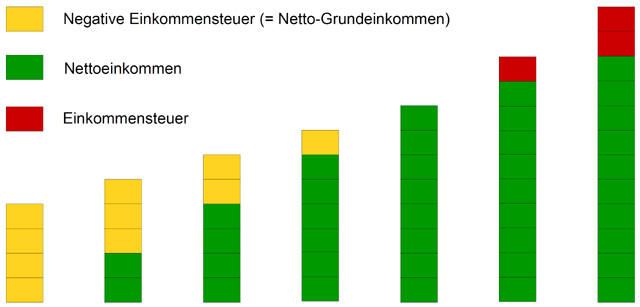
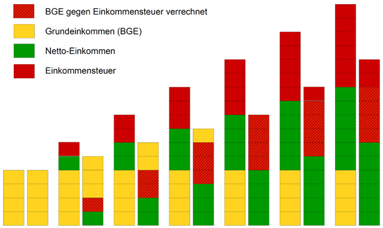
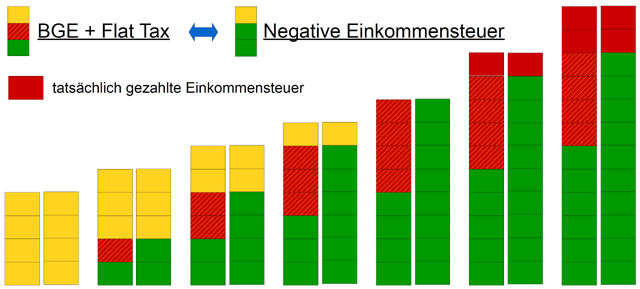

Ist die Negative Einkommensteuer ein BGE?
Eine "Negative Einkommensteuer" ist ein bedingungsloses Grundeinkommen, wenn sie die vier Kriterien des Netzwerks Grundeinkommen erfüllt (siehe Was ist ein BGE).
Da der Begriff "Negative Einkommensteuer" nicht eindeutig definiert ist und sich nicht an den vier BGE-Kriterien orientiert, ist er für diese Diskussion ungeeignet:
Eine negative Einkommensteuer kann ein bedingungsloses Grundeinkommen sein, muss es aber nicht.
Das auf diesen Seiten dargestellte Finanzierungsmodell entspricht (wie die meisten Modelle) steuer-technisch einer Negativen Einkommensteuer, und erfüllt zugleich die vier Kriterien. Der wichtigste Unterschied zur traditionellen Negativen Einkommensteuer liegt darin, dass der Abgleich von BGE und Steuer implizit auf dem Konto des Steuerzahlers/BGE-Empfängers stattfindet und nicht durch eine extrem aufwendige und komplizierte Jahres-Steuererklärung. Die meisten Steuern können als Quellensteuer abgeführt werden (Löhne, Gehälter, Renten, Kapitalerträge) und werden durch die Überweisung des Grundeinkommens teils, ganz oder über-kompensiert. Der individuelle Effektiv-Steuersatz (positiv oder negativ) ergibt sich so automatisch und muss nicht vom Finanzamt geschätzt und jährlich nachträglich berechnet werden.
Hier eine Darstellung der Berechnungs-Alternativen (bei gleichen Ergebnissen):

Traditionelles Modell einer Negativen Einkommensteuer: Eine maximale negative Einkommensteuer nimmt mit zunehmendem Einkommen ab bis Null und wird danach zu einer positiven Einkommensteuer mit zunehmendem Steuersatz. (Verrechnung BGE mit Einkommensteuer).
Scheinbar ist bei diesem Verfahren der Finanzierungsbedarf gering, da nur sehr niedrige Einkommen aus höheren Steuern auf sehr hohe Einkommen aufgestockt werden.
Tatsächlich ist diese Berechnung jedoch das mit weitem Abstand am wenigsten intelligente Verfahren (s. weiter unten), da die tatsächliche Steuerlast nur sehr aufwendig und erst nach Abschluss des Steuerjahres berechnet werden kann.

In dieser Graphik ist das BGE als zusätzliches (Sockel-)Einkommen dargestellt. Gegenfinanziert wird es durch die wesentlich höheren Steuern auf alle anderen Einkommen.
Ermöglicht eine sehr einfache Berechnung aller Steuern - in den allermeisten Fällen als Quellensteuer - unabhängig vom Gesamt-Jahreseinkommen. Die Verrechnung von Steuer und Steuer-Rückzahlung (= BGE) findet implizit auf dem Konto des Steuerpflichtigen statt.

In dieser Graphik sind die Säulen der vorhergehenden nochmals dargestellt, jeweils zusammen mit einer 2. Säule, in der die zu zahlenden Steuern mit dem Sockeleinkommen BGE verrechnet sind.
Die jeweils 1. Säule zeigt die tatsächlichen Zahlungen an das Finanzamt (Steuer), vom Finanzamt (BGE) und Netto-Einkommen. Die jeweils 2. Säle zeigt den Verrechnungs-Effekt von Steuer und BGE.
Der Effektiv-Steuersatz wird nicht je Einkommen vom Finanzamt nachträglich berechnet, sondern ergibt sich aus Brutto-Einkommen, BGE und dem einheitlichen Steuersatz (flat tax).
(Die "Verrechnung" findet auf dem persönlichen Giro-Konto statt: weniger Netto, dafür das BGE).

Gegenüberstellung Netto-Berechnung aus BGE und Flat Tax (jeweils 1. Säule) gegen die Netto-Berechnung aus dem individuellen Jahres-Einkommen mit negativer Einkommensteuer (2. Säule, aus Graphik 1). Beide Verfahren führen zu den gleichen Netto-Einkommen.
Powered by CMSimple| Template: ge-webdesign.de| Login